MELSERVO-J5 Series Linear Servo Motor Penunjukan Model

Seri LM-H3 (Catatan 1)
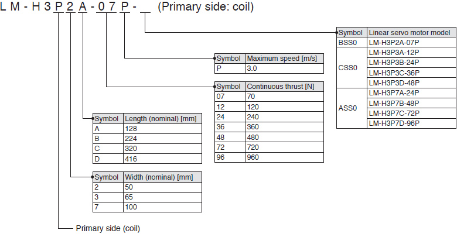
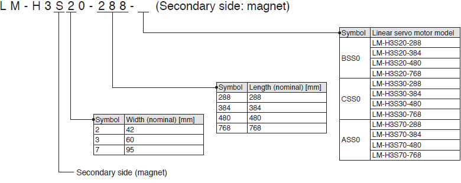
- Catatan:
- 1. Bagian ini menjelaskan arti setiap simbol dalam nama model. Beberapa kombinasi simbol tidak tersedia.
Seri LM-AJ (Catatan 1)
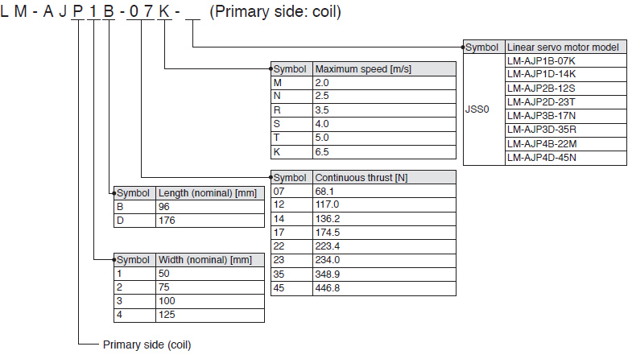
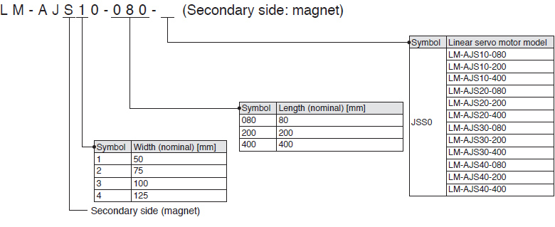
- Catatan:
- 1. Bagian ini menjelaskan arti setiap simbol dalam nama model. Beberapa kombinasi simbol tidak tersedia.
Seri LM-F (Catatan 1)
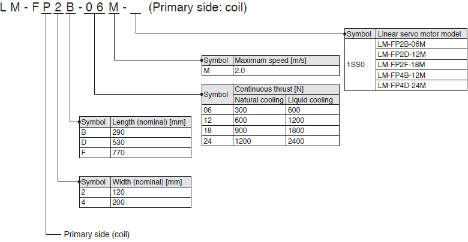
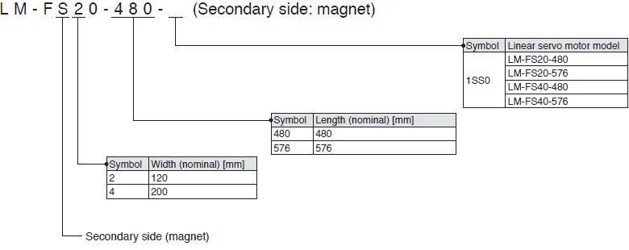
- Catatan:
- 1. Bagian ini menjelaskan arti setiap simbol dalam nama model. Beberapa kombinasi simbol tidak tersedia.
Seri LM-K2 (Catatan 1)
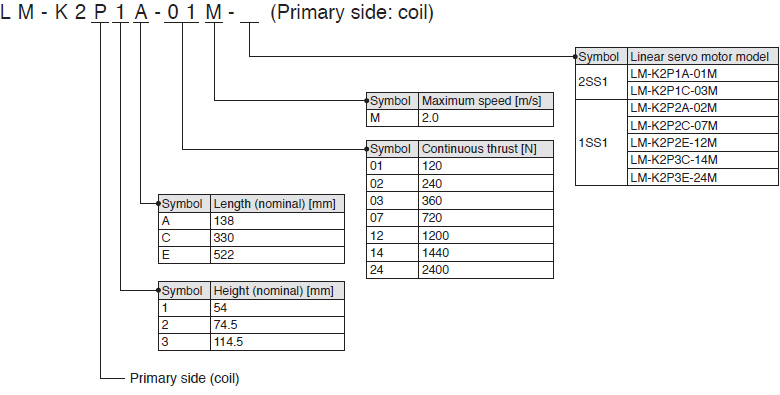

- Catatan:
- 1. Bagian ini menjelaskan arti setiap simbol dalam nama model. Beberapa kombinasi simbol tidak tersedia.
Seri LM-U2 (Catatan 1)
Seri LM-U2 (Daya Dorong Sedang)
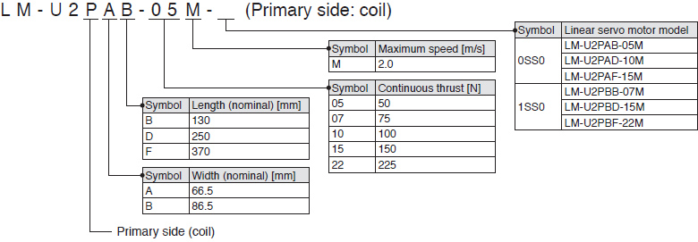
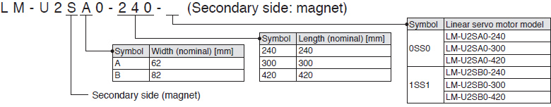
Seri LM-U2 (Dorongan Besar)
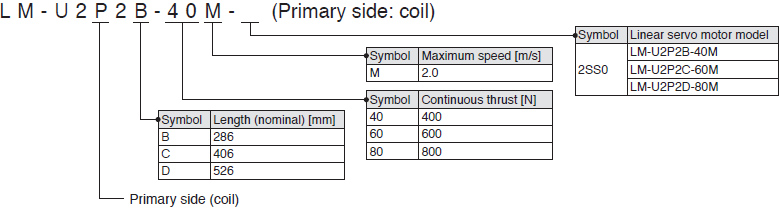
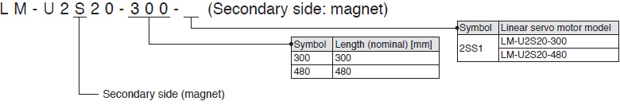
- Catatan:
- 1. Bagian ini menjelaskan arti setiap simbol dalam nama model. Beberapa kombinasi simbol tidak tersedia.
Seri LM-AU (Catatan 1)
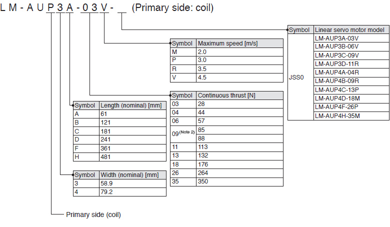
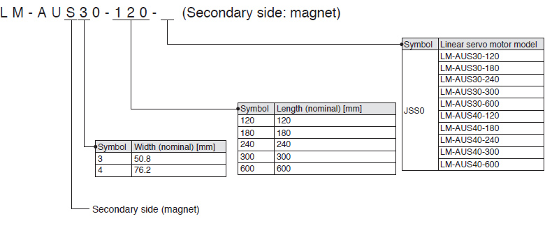
- Catatan:
- 1. Bagian ini menjelaskan apa yang ditunjukkan oleh setiap simbol dalam nama model. Beberapa kombinasi simbol tidak tersedia.
- 2. Dorongan kontinu untuk LM-AUP3C-09V-JSS0 adalah 85 N.
Dorongan kontinu untuk LM-AUP4B-09R-JSS0 adalah 88 N.